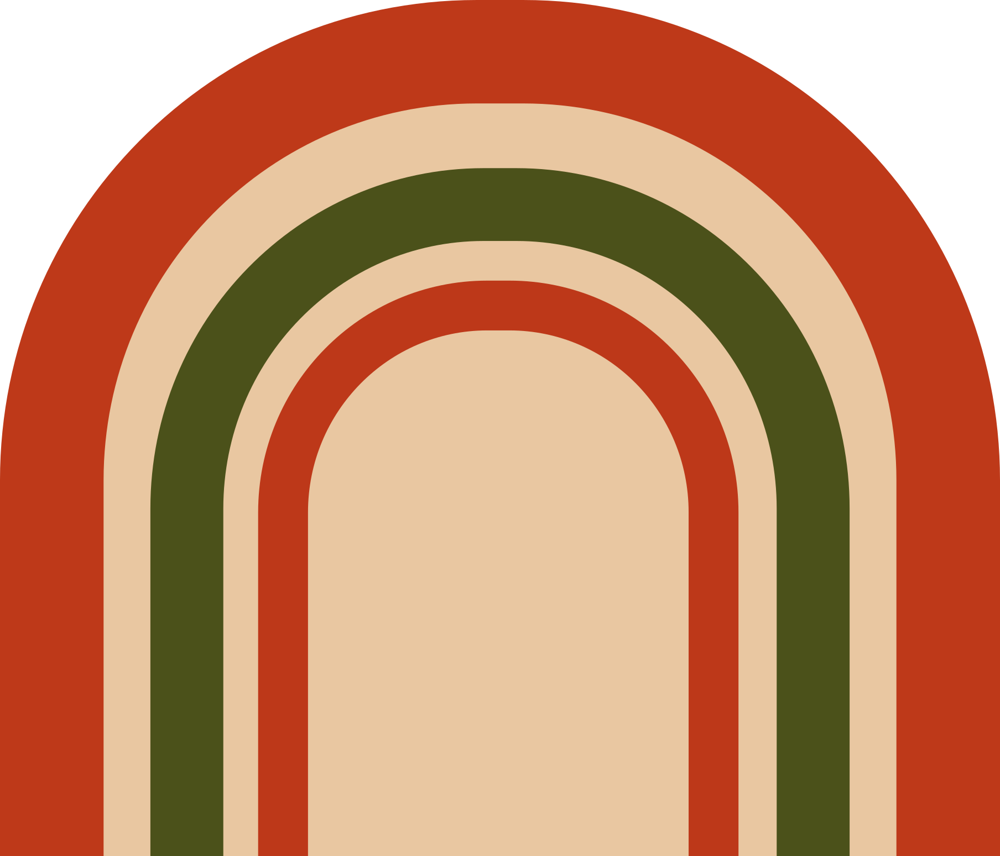

Praia da Gamboa · Garopaba / SC
O caminho da praia
passa pela Casa 58.
Pizza de massa caseira, café e comida boa para levar. Escolha o seu momento.
Explorar cardápio ↓Feito na Gamboa, com calma.Role para descobrir ↓
Quinta, sexta e sábado
Almoço com hora marcada.
Feito em pequenas quantidades, com reserva até o dia anterior.

Nossa casa
Uma receita de família. Uma parada boa na Gamboa.
A pizza individual de 30 cm é a nossa assinatura: massa caseira, aberta no azeite e assada até ficar dourada. Um balcão pequeno, de passagem e de encontro.
Horários sugeridos na baixa temporada: qui–sex, 10h–19h · sáb–dom, 9h–19h.